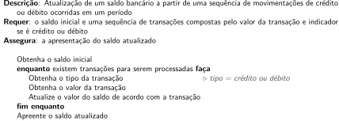

11 Repetições com while
A linguagem C permite laços de repetição usando while, for e do while. Neste capítulo a estrutura e aspectos lógicos do while são apresentados. O for é abordado no Capítulo 12 e o do while, no Capítulo 13.
11.1 A estrutura de repetição while
A estrutura de repetição que o while implementa pode ser chamada de indefinida, pois o número de repetições depende de uma condição que se altera ao longo do tempo. Sua estrutura é apresentada na sequência.
O uso dessa estrutura é intuitivo: enquanto a expressão_lógica for avaliada como verdadeira, o comando é executado. Este último pode ser um comando simples terminado em ponto e vírgula ou um comando composto delimitado por chaves.
O while sempre testa a condição antes de iniciar cada execução, o que leva à possibilidade que nada seja repetido se a condição já for falsa previamente. Caso a condição seja verdadeira, todo os comandos condicionados são executados antes de ser feita nova verificação.
Para que a estrutura de repetição em si faça sentido, em comando deve haver alguma alteração que leve a condição a se tornar falsa em algum momento.
Segue um exemplo simples de uso do while na forma de um programa que implementa o Algoritmo 11.1.
Algoritmo 11.1: Conversão de unidades de pressão para uma sequência de valores.
A implementação desse algoritmo em C pode ser dada como o código seguinte.
/*
Conversão de uma sequência de valores de pressão dadas em mmHg para atm,
usando um valor nulo como sentinela
Requer: Uma sequência potencialmente vazia de valores de pressão (mmHg)
não nulos seguidos por um valor sentinela nulo
Assegura: O valor de cada medida de pressão convertido para atm
*/
#include <stdio.h>
int main(void) {
char entrada[160];
printf("Digite o valor da pressão (mmHg) ou 0 para terminar: ");
fgets(entrada, sizeof entrada, stdin);
double pressao_mmhg;
sscanf(entrada, "%lf", &pressao_mmhg);
while (pressao_mmhg != 0) {
double pressao_atm = pressao_mmhg / 760;
printf("Pressão em ATM: %.2f.\n", pressao_atm);
printf("Digite o valor da pressão (mmHg) ou 0 para terminar: ");
fgets(entrada, sizeof entrada, stdin);
sscanf(entrada, "%lf", &pressao_mmhg);
}
return 0;
}Digite o valor da pressão (mmHg) ou 0 para terminar: 500
Pressão em ATM: 0.66.
Digite o valor da pressão (mmHg) ou 0 para terminar: 1000
Pressão em ATM: 1.32.
Digite o valor da pressão (mmHg) ou 0 para terminar: 2565.26
Pressão em ATM: 3.38.
Digite o valor da pressão (mmHg) ou 0 para terminar: 760.0
Pressão em ATM: 1.00.
Digite o valor da pressão (mmHg) ou 0 para terminar: 0O mapeamento do Algoritmo 11.1 para C é bastante direto. Inicialmente é feita a primeira leitura, que pode ser tanto um valor válido quanto o valor sentinela e, em seguida, é feito o teste. Sendo bem sucedida a verificação (i.e, não é o sentinela), é feita apresentado o resultado da conversão de unidade e solicitado o próximo valor da sequência. Este ciclo de verificação e execução é repetido, sendo encerrado quando a verificação se torna falsa e return 0 é finalmente executado.
Se a sequência for vazia e na entrada de dados constar apenas o valor sentinela, a condição do while falha já na primeira tentativa e o programa se encerra sem que nenhuma conversão seja feita.
Outro ponto curioso sobre a implementação é a verificação de igualdade feita com um valor double. Neste caso, a tolerância não é necessária, pois pressao_mmhg não é o resultado calculado e, portanto, quando for digitado o valor nulo, a conversão será exata.
Para outro exemplo, segue um algoritmo para contabilização do resultado de uma pesquisa, que considera
11.2 O double nas verificações do while
Um cuidado essencial ao programador são as verificações que, embora façam sentido no código, falham por conta da precisão dos tipos numéricos reais, como double ou float.
Para exemplificar essa questão, o trecho de código seguinte pode ser considerado.
double a = 0;
while (a != 1) {
printf("a = %g.\n", a);
a += 0.1;
}Essa repetição nunca termina, pois a nunca será igual a 1. Na precisão dupla que o double proporciona, o valor mais próximo de 0,1 é, na realidade, 0.100000000000000005551115123126. Assim, quando se espera que a variável tenha valor 1, ha uma diferença de 1,11022 \(\times\) 10-6 pelos erros acumulados.
Assim, salvaguardas devem ser adotadas para evitar essas ocorrências.
No exemplo dado, uma solução seria interromper a repetição caso o valor de a ultrapassasse 1.
double a = 0;
while (a <= 1) { // garantia de não ultrapassar o limite
printf("a = %g.\n", a);
a += 0.1;
}Outra alternativa é o estabelecimento de uma tolerância.
double a = 0;
while (fabs(a - 1) < 0.00001) { // considera próximo o suficiente
printf("a = %g.\n", a);
a += 0.1;
}No exemplo de incremento desta seção foi destacado que 0,1 não tem representação exata em um double. O valor 0,25, porém, é exato. Nesse caso, o código seguinte funcionaria conforme o esperado.
double a = 0;
while (a != 1) {
printf("a = %g.\n", a);
a += 0.25;
}Mesmo assim, recomenda-se fortemente que a igualdade ou desigualdade não seja empregada. O uso de while (a <= 1) deve ser usado mesmo neste caso.
11.3 Repetições baseadas na entrada
Muitas das repetições nos programas são necessárias para processar uma sequência de dados de entrada. De forma geral, o while é usado quando não se conhece a quantidade de repetições que serão executadas, relacionadas neste caso ao número de dados que servirão como entrada para o programa.
Nesse contexto, há duas formas importantes para a entrada, uma usando um valor sentinela (que indica o fim dos dados) e outra que reconhece que os dados acabaram por si, em um indicador explícito.
11.3.1 Entrada com sentinela
Uma forma comum de entrada de dados é o uso de um valor sentinela que indica o fim dos dados. O programa seguinte apresenta uma sequência de leituras para a soma de valores inteiros maiores que zero, usando o valor nulo como sentinela para indicar o fim dos dados.
/*
Exemplo de leitura de valores inteiros positivos, usando o zero como sentinela
*/
#include <stdio.h>
int main(void) {
char entrada[160];
printf("Digite um valor inteiro positivo ou zero para terminar: ");
fgets(entrada, sizeof entrada, stdin);
int valor;
sscanf(entrada, "%d", &valor);
while (valor != 0) {
printf("Valor digitado: %d.\n", valor);
printf("Digite um valor inteiro positivo ou zero para terminar: ");
fgets(entrada, sizeof entrada, stdin);
sscanf(entrada, "%d", &valor);
}
printf("Encerrado!\n");
return 0;
}Digite um valor inteiro positivo ou zero para terminar: 12
Valor digitado: 12.
Digite um valor inteiro positivo ou zero para terminar: 26
Valor digitado: 26.
Digite um valor inteiro positivo ou zero para terminar: 13
Valor digitado: 13.
Digite um valor inteiro positivo ou zero para terminar: 3
Valor digitado: 3.
Digite um valor inteiro positivo ou zero para terminar: 20
Valor digitado: 20.
Digite um valor inteiro positivo ou zero para terminar: 0
Encerrado!Não é incomum o programador optar por expandir o conceito do valor sentinela. Sem prejuízo aos propósitos do programa original, o programador poderia usar na condição do while a a expressão valor > 0, o que incluiria qualquer valor negativo como sentinela.
11.3.2 Detecção do encerramento do fluxo de entrada
Outra alternativa para indicar o fim da sequência de dados é o encerramento da entrada em si. Em sistemas Linux, ao se digitar Ctrl-D em uma linha vazia é indicado ao programa que a entrada de dados foi encerrada. No Windows, o equivalente é digitar Ctrl-Z seguido de ENTER.
Uma leitura com função fgets é capaz de entender o encerramento dos dados. Essa função, como outras funções, retorna um valor resultante, o qual tem sido sistematicamente ignorado. Como exemplo, os comandos seguintes fazem uma leitura e apresentam o resultado lido. Neste caso, o valor de retorno do fgets é ignorado.
char entrada[160];
fgets(entrada, sizeof entrada, stdin);
printf("%s", entrada);Entretanto, essa função retorna um valor que pode ser verificado. O valor NULL é retornado em caso de erro. Assim, com uma verificação extra, a leitura da linha poderia ser escrita conforme apresentado na sequência.
char entrada[160];
if (fgets(entrada, sizeof entrada, stdin) != NULL)
printf("%s", entrada);
else
printf("Houve algum problema com a leitura.\n");O “problema” mais comum da falha na leitura é o fim do fluxo de entrada. Assim, um programa pode usar essa verificação para repetir a leitura condicionalmente. O programa seguinte exemplifica leituras de linha de texto e contagem do número de linhas1.
/*
Contagem do número de linhas no fluxo de entrada
Requer: uma sequência de linhas de texto
Assegura: a apresentação do número de linhas desse texto
*/
#include <stdio.h>
int main(void) {
char entrada[160];
printf("Digite seu texto linha a linha (Ctrl-D) para terminar.\n");
int contador_linhas = 0;
while (fgets(entrada, sizeof entrada, stdin) != NULL)
contador_linhas++;
printf("Número de linhas: %d.\n", contador_linhas);
return 0;
}Digite seu texto linha a linha (Ctrl-D) para terminar.
CAPITULO V
O AGREGADO
Nem sempre ia naquele passo vagaroso e rígido. Também se descompunha em
acionados, era muita vez rápido e lépido nos movimentos, tao natural nesta como
naquela maneira. Outrossim, ria largo, se era preciso, de um grande riso sem
vontade, mas comunicativo, a tal ponto as bochechas, os dentes, os olhos, toda a
cara, toda a pessoa, todo o mundo pareciam rir nele. Nos lances graves,
gravíssimo.
Número de linhas: 9.As funções de leitura, quando detectam o fim do fluxo de entrada associado a stdin, ignoram entradas subsequentes. Assim, depois de terminada uma sequência com Ctrl-D, outras chamadas a fgets são ignoradas. Isso acontece devido a um controle do fluxo feito pelo sistema operacional. Entretanto, é possível retomar a leitura com clearerr, que limpa o indicador de fim de fluxo.
/*
Contagem do número de linhas no fluxo de entrada
Requer: uma sequência de linhas de texto
Assegura: a apresentação do número de linhas desse texto
*/
#include <stdio.h>
#include <string.h>
int main(void) {
char entrada[160];
printf("Digite seu texto linha a linha (Ctrl-D) para terminar.\n");
int contador_linhas = 0;
while (fgets(entrada, sizeof entrada, stdin) != NULL)
contador_linhas++;
printf("Número de linhas: %d.\n", contador_linhas);
// Reassumindo a leitura de stdin
clearerr(stdin);
printf("Digite seu nome: ");
char nome[80];
fgets(nome, sizeof nome, stdin);
nome[strlen(nome) - 1] = '\0'; // eliminação do \n
printf("Obrigado, %s, por sua digitação!\n", nome);
return 0;
}Sem a chamada a clearerr, a leitura do nome é ignorada.
11.4 Exemplos
Esta seção apresenta alguns exemplos mais realistas do uso do while na codificação de alguns algoritmos.
11.4.1 Contagem regressiva
Um exemplo simples de repetição com while é apresentado na sequência. O programa implementa um cronômetro regressivo simples e segue o Algoritmo 11.2.
Algoritmo 11.2: Contagem regressiva segundo a segundo
/*
Realiza a contagem regressiva para um tempo determinado
Requer: o tempo para contagem (inteiro)
Assegura: a apresentação de uma contagem regressiva e mensagem de finalização
*/
#include <stdio.h>
#include <unistd.h>
int main(void) {
char entrada[160];
printf("Digite o tempo para contagem.\n"
"Exemplos: '10' ou '10s' para 10s, '3m' para 3 minutos "
"ou '5h' para 5 horas.\n"
"Tempo: ");
fgets(entrada, sizeof entrada, stdin);
int tempo_restante;
char unidade_tempo = 's'; // padrão: segundos
sscanf(entrada, "%d%c", &tempo_restante, &unidade_tempo);
// Conversão de unidades se necessário; senão considera segundos
switch (unidade_tempo) {
case 'h': // horas
tempo_restante = tempo_restante * 3600;
break;
case 'm': // minutos
tempo_restante = tempo_restante * 60;
break;
}
// Contagem
printf("Contagem para %d segundo(s):\n", tempo_restante);
while (tempo_restante >= 0) {
int tempo_horas = tempo_restante / 3600;
int tempo_minutos = (tempo_restante - tempo_horas * 3600) / 60;
int tempo_segundos = tempo_restante % 60;
printf("> Tempo restante: %02dh %02dmin %02ds\r", tempo_horas,
tempo_minutos, tempo_segundos);
fflush(stdout);
sleep(1); // aguarda 1 segundo
tempo_restante--;
}
printf("\nObrigado pela paciência!\n");
return 0;
}Este código usa o while para a contagem regressiva. A cada execução, é apresentando o valor do cronômetro (dado por tempo_restante) e esse tempo é decrescido de um segundo. A chamada sleep(1) (declarada em unistd.h) suspende a execução do processo por um segundo antes de retomar a contagem.
Valem ainda dois comentários sobre esse programa. O primeiro é sobre o uso de \r ao apresentar o cronômetro. Esse caractere faz com que o cursor do terminal volte para o início da linha sem passar para a linha de baixo e, assim, o próximo printf sobrescreve o horário anterior, atualizando-o. O outro ponto é o uso da função fflush(stdout) (incluído via stdio.h), a qual faz com que o texto escrito pelo programa seja imediatamente colocado no terminal. Sem ele, há atrasos na escrita e o contador parece irregular.
O programa de contagem regressiva não é preciso. Ele se baseia em intervalos de um segundo, mas a cada repetição outras operações são feitas. A longo prazo, o cronômetro ficará atrasado em relação ao tempo real. Este programa é para ser um mero exemplo da repetição e não tem maiores pretensões.
11.4.2 Atualização de saldo
Um saldo bancário tem um valor inicial e, dependendo de uma série de transações de crédito ou débito, o montante é modificado. Esta é a proposta do Algoritmo 11.3.
Algoritmo 11.3: Atualização de saldo bancário a partir de créditos e débitos.

A implementação em C apresentada na sequência considera que cada transação é entrada expressando o tipo da transação com C para crédito ou D para débito em uma linha e o valor monetário em outra. Não há valor sentinela para finalizar a entrada e o programa assume que o encerramento do fluxo de entrada implica no fim dos dados.
/*
Atualização de um saldo bancário a partir de uma sequência de movimentações de crédito ou débito ocorridas em um período
Requer: o saldo inicial e uma sequência de transações, cada um fazendo indicando separadamente o tipo 'C' ou 'D' (crédito ou débito) e o valor
Assegura: a apresentação do saldo atualizado
Transações não reconhecidas são rejeitadas
*/
#include <stdio.h>
int main(void) {
char entrada[160];
// Obtenção do saldo inicial
printf("Digite o saldo inicial: ");
fgets(entrada, sizeof entrada, stdin);
double saldo;
sscanf(entrada, "%lf", &saldo);
// Atualização do saldo de acordo com as transações
printf("Digite Ctrl-D (Linux) ou Ctrl-Z (Windows) para encerrar.\n\n"
"Tipo (C ou D): ");
while (fgets(entrada, sizeof entrada, stdin) != NULL) { // leitura do tipo
char tipo_transacao = '*'; // '*' = inválido
sscanf(entrada, "%c", &tipo_transacao);
printf("Valor: R$ ");
double valor_transacao;
fgets(entrada, sizeof entrada, stdin); // leitura do valor
sscanf(entrada, "%lf", &valor_transacao);
switch (tipo_transacao) {
case 'C':
saldo += valor_transacao;
break;
case 'D':
saldo -= valor_transacao;
break;
default:
printf("Transação não reconhecida (%c).\n", tipo_transacao);
}
printf("Tipo (C ou D): "); // próxima transação
}
// Apresentação do saldo atualizado
printf("\nSaldo final: R$ %.2f.\n", saldo);
return 0;
}Digite o saldo inicial: 5800.00
Digite Ctrl-D (Linux) ou Ctrl-Z (Windows) para encerrar.
Tipo (C ou D): D
Valor: R$ 300.00
Tipo (C ou D): C
Valor: R$ 82.50
Tipo (C ou D): C
Valor: R$ 181.00
Tipo (C ou D): D
Valor: R$ 1.25
Tipo (C ou D): D
Valor: R$ 789.42
Tipo (C ou D):
Saldo final: R$ 4972.83.O texto digitado como exemplo foi extraído de Dom Casmurro, de Machado de Assis, obtido em http://www.educadores.diaadia.pr.gov.br/arquivos/File/2010/literatura/obras_completas_literatura_brasileira_e_portuguesa/MACHADO_ASSIS/DCASMURRO/CASMURRO5.HTM.↩︎